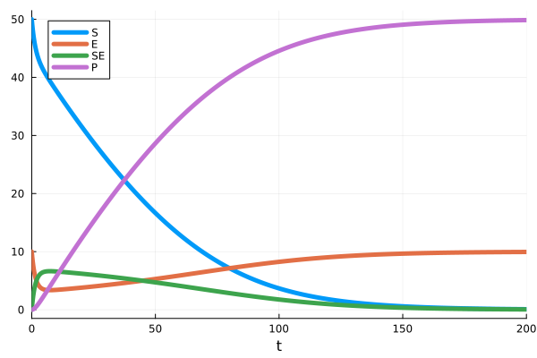
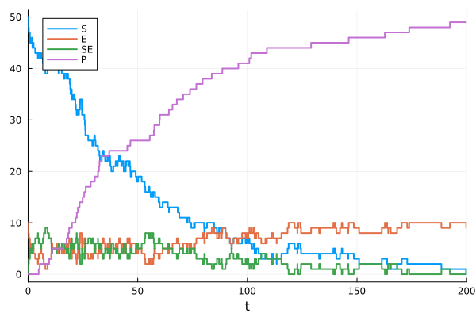
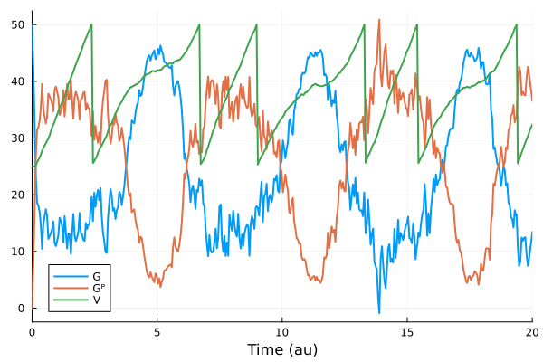

Catalyst.jl for Reaction Network Modeling
Catalyst.jl is a symbolic modeling package for analysis and high-performance simulation of chemical reaction networks and related dynamical systems. Models can be specified using an intuitive domain-specific language (DSL) or constructed programmatically. Catalyst supports ODE, steady-state ODE, SDE, stochastic chemical kinetics (jump), and hybrid simulations, including models that couple reactions with differential equations, events, and external noise (via Brownian Motions and/or Poisson Processes).
Built on ModelingToolkitBase.jl and Symbolics.jl, Catalyst leverages symbolic computation for sparsity exploitation, Jacobian construction, dependency graph analysis, and parallelism. Generated models integrate with the broader Julia and SciML ecosystems for sensitivity analysis, parameter estimation, bifurcation analysis, and more.
Features
- DSL for reaction networks — a readable, concise format for specifying models using chemical reaction notation.
- Multiple simulation types — generate and simulate ODE, steady-state ODE, SDE, jump, and hybrid models from a single
ReactionSystem. - Coupled models — combine reactions with differential equations, events, Brownian noise (
@brownians), and Poisson jumps (@poissonians). - Network analysis — compute linkage classes, deficiencies, reversibility, and other network properties.
- Compositional modeling — build models hierarchically using
@network_component,compose, andextend. - Spatial modeling — simulate reaction networks on discrete spatial domains.
- Steady state analysis — find and analyze steady states, stability, and bifurcation diagrams.
- Inverse problems — parameter estimation, sensitivity analysis, and structural identifiability.
- Model I/O — import from SBML and BioNetGen
.netfiles, export to LaTeX and other formats. - Visualization — reaction network graphs and LaTeX rendering.
Ecosystem
Catalyst integrates with a wide range of Julia packages:
| Category | Packages |
|---|---|
| ODE/SDE/Jump solving | OrdinaryDiffEq, StochasticDiffEq, JumpProcesses |
| GPU parallelism | DiffEqGPU |
| Steady states & bifurcations | HomotopyContinuation, SteadyStateDiffEq, NonlinearSolve, BifurcationKit |
| Parameter estimation | Optimization, PEtab, Turing |
| Sensitivity & identifiability | GlobalSensitivity, SciMLSensitivity, StructuralIdentifiability |
| Dynamical systems | DynamicalSystems |
| Visualization | Plots, Makie, GraphMakie, Latexify |
| Model import | SBMLImporter, SBMLToolkit, ReactionNetworkImporters |
| Stochastic extensions | MomentClosure, FiniteStateProjection, DelaySSAToolkit |
How to read this documentation
The Catalyst documentation is separated into sections describing Catalyst's various features. Where appropriate, some sections will also give advice on best practices for various modeling workflows, and provide links with further reading. Each section also contains a set of relevant example workflows. Finally, the API section contains a list of all functions exported by Catalyst (as well as descriptions of them and their inputs and outputs).
New users are recommended to start with either the Introduction to Catalyst and Julia for New Julia users or Introduction to Catalyst sections (depending on whether they are familiar with Julia programming or not). This should be enough to carry out many basic Catalyst workflows.
This documentation contains code which is dynamically run whenever it is built. If you copy the code and run it in your Julia environment it should work. The exact Julia environment that is used in this documentation can be found here.
For most code blocks in this documentation, the output of the last line of code is printed at the of the block, e.g.
1 + 23and
@reaction_network begin
(p,d), 0 <--> X
end\[ \begin{align*} \varnothing &\xrightleftharpoons[d]{p} \mathrm{X} \end{align*} \]
However, in some situations (e.g. when output is extensive, or irrelevant to what is currently being described) we have disabled this, e.g. like here:
1 + 2and here:
@reaction_network begin
(p,d), 0 <--> X
endInstallation
Catalyst is an officially registered Julia package, which can be installed through the Julia package manager:
using Pkg
Pkg.add("Catalyst")Many Catalyst features require the installation of additional packages. E.g. for ODE-solving and simulation plotting
Pkg.add("OrdinaryDiffEqDefault")
Pkg.add("Plots")is also needed.
It is strongly recommended to install and use Catalyst in its own environment with the minimal set of needed packages. For example, to install Catalyst and Plots in a new environment named catalyst_project (saved in the current directory) one can say
Pkg.activate("catalyst_project")
Pkg.add("Catalyst")
Pkg.add("Plots")If one would rather just create a temporary environment that is not saved when exiting Julia you can say
Pkg.activate(; temp = true)
Pkg.add("Catalyst")
Pkg.add("Plots")After installation, we suggest running
Pkg.status("Catalyst")to confirm that the latest version of Catalyst was installed (and not an older version). If you have installed into a new environment this should always be the case. However, if you installed into an existing environment, such as the default Julia global environment, the presence of incompatible versions of other pre-installed packages could lead to older versions of Catalyst being installed. In this case we again recommend creating a new environment and installing Catalyst there to obtain the latest version.
A more thorough guide for setting up Catalyst and installing Julia packages can be found here.
Illustrative example
Deterministic ODE simulation of Michaelis-Menten enzyme kinetics
Here we show a simple example where a model is created using the Catalyst DSL, and then simulated as an ordinary differential equation.
# Fetch required packages.
using Catalyst, OrdinaryDiffEqDefault, Plots
# Create model.
model = @reaction_network begin
kB, S + E --> SE
kD, SE --> S + E
kP, SE --> P + E
end
# Create an ODE that can be simulated.
u0 = [:S => 50.0, :E => 10.0, :SE => 0.0, :P => 0.0]
tspan = (0., 200.)
ps = [:kB => 0.01, :kD => 0.1, :kP => 0.1]
ode = ODEProblem(model, u0, tspan, ps)
# Simulate ODE and plot results.
sol = solve(ode)
plot(sol; lw = 5)
Stochastic jump simulations
The same model can be used as input to other types of simulations. E.g. here we instead generate and simulate a stochastic chemical kinetics jump process model.
# Create and simulate a jump process (here using Gillespie's direct algorithm).
# The initial conditions are now integers as we track exact populations for each species.
using JumpProcesses
u0_integers = [:S => 50, :E => 10, :SE => 0, :P => 0]
jprob = JumpProblem(model, u0_integers, tspan, ps)
jump_sol = solve(jprob)
plot(jump_sol; lw = 2)
More elaborate example
In the above example, we used basic Catalyst workflows to simulate a simple model. Here we instead show how various Catalyst features can compose to create a much more advanced model. Our model describes how the volume of a cell ($V$) is affected by a growth factor ($G$). The growth factor only promotes growth while in its phosphorylated form ($G^P$). The phosphorylation of $G$ ($G \to G^P$) is promoted by sunlight, which is modeled as the cyclic sinusoid $k_p (\sin(t) + 1)$. When the cell reaches a critical volume ($V_m$) it undergoes cell division. Environmental stochasticity ($\sigma\,dW$) is added to the volume equation via the @brownians DSL option. First, we declare our model:
using Catalyst
cell_model = @reaction_network begin
@parameters Vₘ g σ
@brownians W
@equations begin
D(V) ~ g*Gᴾ + σ*W
end
@continuous_events begin
[V ~ Vₘ] => [V => V/2]
end
kₚ*(sin(t)+1)/V, G --> Gᴾ
kᵢ/V, Gᴾ --> G
end\[ \begin{align*} \mathrm{G} &\xrightleftharpoons[\frac{k_i}{V}]{\frac{k_p \left( 1 + \sin\left( t \right) \right)}{V}} \mathrm{G^P} \\ \frac{\mathrm{d} V}{\mathrm{d}t} &= W \sigma + g G^P \end{align*} \]
We now study the system as a Chemical Langevin Dynamics SDE model:
u0 = [:V => 25.0, :G => 50.0, :Gᴾ => 0.0]
tspan = (0.0, 20.0)
ps = [:Vₘ => 50.0, :g => 0.3, :kₚ => 100.0, :kᵢ => 60.0, :σ => 0.5]
sprob = SDEProblem(cell_model, u0, tspan, ps)SDEProblem with uType Vector{Float64} and tType Float64. In-place: true
Initialization status: FULLY_DETERMINED
Non-trivial mass matrix: false
timespan: (0.0, 20.0)
u0: 3-element Vector{Float64}:
50.0
0.0
25.0This problem encodes the following stochastic differential equation model:
\[\begin{align*} dG(t) &= - \left( \frac{k_p(\sin(t)+1)}{V(t)} G(t) + \frac{k_i}{V(t)} G^P(t) \right) dt - \sqrt{\frac{k_p (\sin(t)+1)}{V(t)} G(t)} \, dW_1(t) + \sqrt{\frac{k_i}{V(t)} G^P(t)} \, dW_2(t) \\ dG^P(t) &= \left( \frac{k_p(\sin(t)+1)}{V(t)} G(t) - \frac{k_i}{V(t)} G^P(t) \right) dt + \sqrt{\frac{k_p (\sin(t)+1)}{V(t)} G(t)} \, dW_1(t) - \sqrt{\frac{k_i}{V(t)} G^P(t)} \, dW_2(t) \\ dV(t) &= \left(g \, G^P(t)\right) dt + \sigma \, dW(t) \end{align*}\]
where $dW_1(t)$ and $dW_2(t)$ are the Chemical Langevin Equation noise terms from the reactions, and $dW(t)$ is an independent Brownian motion representing environmental stochasticity. Finally, we can simulate and plot the results:
using StochasticDiffEq, Plots
sol = solve(sprob, EM(); dt = 0.05)
plot(sol; xguide = "Time (au)", lw = 2)
Getting Help
Catalyst developers are active on the Julia Discourse and the Julia Slack channels #sciml-bridged and #sciml-sysbio. For bugs or feature requests, open an issue.
Supporting and Citing Catalyst.jl
The software in this ecosystem was developed as part of academic research. If you would like to help support it, please star the repository as such metrics may help us secure funding in the future. If you use Catalyst as part of your research, teaching, or other activities, we would be grateful if you could cite our work:
@article{CatalystPLOSCompBio2023,
doi = {10.1371/journal.pcbi.1011530},
author = {Loman, Torkel E. AND Ma, Yingbo AND Ilin, Vasily AND Gowda, Shashi AND Korsbo, Niklas AND Yewale, Nikhil AND Rackauckas, Chris AND Isaacson, Samuel A.},
journal = {PLOS Computational Biology},
publisher = {Public Library of Science},
title = {Catalyst: Fast and flexible modeling of reaction networks},
year = {2023},
month = {10},
volume = {19},
url = {https://doi.org/10.1371/journal.pcbi.1011530},
pages = {1-19},
number = {10},
}Reproducibility
The documentation of this SciML package was built using these direct dependencies,
Status `~/work/Catalyst.jl/Catalyst.jl/docs/Project.toml`
[6e4b80f9] BenchmarkTools v1.6.3
[0f109fa4] BifurcationKit v0.5.6
[13f3f980] CairoMakie v0.15.9
[479239e8] Catalyst v16.0.0 `~/work/Catalyst.jl/Catalyst.jl`
[a93c6f00] DataFrames v1.8.1
[82cc6244] DataInterpolations v8.9.0
[2b5f629d] DiffEqBase v6.210.1
[31c24e10] Distributions v0.25.123
[e30172f5] Documenter v1.17.0
[7c1d4256] DynamicPolynomials v0.6.4
[61744808] DynamicalSystems v3.6.7
[af5da776] GlobalSensitivity v2.10.0
[1ecd5474] GraphMakie v0.6.3
[86223c79] Graphs v1.14.0
[f213a82b] HomotopyContinuation v2.18.0
[40713840] IncompleteLU v0.2.1
[ccbc3e58] JumpProcesses v9.23.1
[23fbe1c1] Latexify v0.16.10
[7ed4a6bd] LinearSolve v3.65.0
[7771a370] ModelingToolkitBase v1.23.0
[46757867] NetworkLayout v0.4.10
⌃ [8913a72c] NonlinearSolve v4.15.0
⌅ [5959db7a] NonlinearSolveFirstOrder v1.11.1
⌃ [3e6eede4] OptimizationBBO v0.4.5
⌅ [bca83a33] OptimizationBase v4.2.0
⌃ [cb963754] OptimizationEvolutionary v0.4.6
⌃ [4e6fcdb7] OptimizationNLopt v0.3.8
⌃ [36348300] OptimizationOptimJL v0.4.8
⌃ [42dfb2eb] OptimizationOptimisers v0.3.15
[6ad6398a] OrdinaryDiffEqBDF v1.22.0
[50262376] OrdinaryDiffEqDefault v1.13.0
[43230ef6] OrdinaryDiffEqRosenbrock v1.25.0
[2d112036] OrdinaryDiffEqSDIRK v1.12.0
[b1df2697] OrdinaryDiffEqTsit5 v1.9.0
[79d7bb75] OrdinaryDiffEqVerner v1.11.0
[91a5bcdd] Plots v1.41.6
[8a4e6c94] QuasiMonteCarlo v0.3.5
[0bca4576] SciMLBase v2.149.0
[1ed8b502] SciMLSensitivity v7.99.0
[276daf66] SpecialFunctions v2.7.1
[90137ffa] StaticArrays v1.9.18
[9672c7b4] SteadyStateDiffEq v2.9.0
[789caeaf] StochasticDiffEq v6.98.0
[220ca800] StructuralIdentifiability v0.5.19
[2efcf032] SymbolicIndexingInterface v0.3.46
[0c5d862f] Symbolics v7.15.3
[56ddb016] Logging v1.11.0
Info Packages marked with ⌃ and ⌅ have new versions available. Those with ⌃ may be upgradable, but those with ⌅ are restricted by compatibility constraints from upgrading. To see why use `status --outdated`and using this machine and Julia version.
Julia Version 1.12.5
Commit 5fe89b8ddc1 (2026-02-09 16:05 UTC)
Build Info:
Official https://julialang.org release
Platform Info:
OS: Linux (x86_64-linux-gnu)
CPU: 4 × Intel(R) Xeon(R) Platinum 8370C CPU @ 2.80GHz
WORD_SIZE: 64
LLVM: libLLVM-18.1.7 (ORCJIT, icelake-server)
GC: Built with stock GC
Threads: 1 default, 1 interactive, 1 GC (on 4 virtual cores)